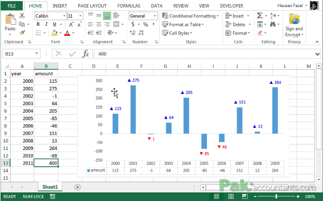
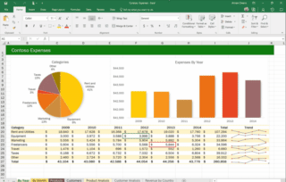
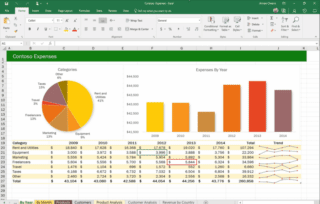
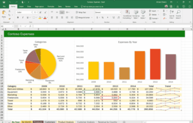

Welcome to my website, which aims to share a bit about data analysis!
In short, what I do:

 


Data analysis tools
- Python – a versatile programming language with many libraries for data analysis, such as Pandas, NumPy, and Matplotlib.
- SQL – a query language for databases, essential for extracting data from relational databases.
- Power BI – a Microsoft tool for creating interactive reports and dashboards.
- Excel – a popular spreadsheet, often the first step in data analysis.
- Tableau – an advanced data visualization tool with an intuitive interface.
Frequently Asked Questions (FAQ)
Do I need a strong computer to work as a Data Analyst?
Not always. At the start, a laptop with i5/i7 processor, 8–16 GB RAM, and SSD is enough. For big data, better hardware may be needed.
Which operating system is best – Windows, Mac, or Linux?
Each has good points. Windows is most popular. Mac works well with Python and BI tools. Linux gives more control but is harder for beginners.
Is it worth having two monitors?
Yes, a second monitor helps a lot. For example, one screen for code and one for data or documents.
Do I need special peripheral devices?
No, but a good mouse, keyboard, and comfortable desk/chair make work better.
Can I work remotely as a Data Analyst?
Yes, most work can be done remotely if you have good equipment and internet.
What programs do Data Analysts use most?
Excel, SQL (like MySQL, PostgreSQL), Python (Pandas, Matplotlib), Power BI, Tableau, Jupyter Notebook.
Do I need to know programming?
Not right away. Excel and SQL are basic. Python or R are good to learn later.
Are free tools enough to learn?
Yes, you can learn using free versions of Power BI, Google Sheets, Jupyter, VS Code, Google Colab.
What is Jupyter Notebook?
It is a tool where you can write code (mainly Python), visualize data, and document analysis.
My experiences with data analysis
School Experience
At school, I learned the basics of data analysis, like how to group queries. This was my first time working with these tools and ideas. School gave me a good foundation to understand data better.
Experience Outside School
After school, I took a course in data analysis. This course helped me learn more and gave me a certificate to show my skills. I also did an internship where I made reports and charts. Now, I work as an assistant about once a month. I help with tasks and learn a lot from my experienced coworkers.
My skill level
Here are various charts showcasing my skills.